전자계산기조직응용기사 (2012-08-26 기출문제)
1과목: 전자계산기 프로그래밍
1. 매크로 관련 용어 중 매크로 호출 부분에 정의된 매크로 코드를 삽입하는 것을 의미하는 것은?
- 매크로 확장
- 매크로 호출
- 매크로 정의
- 매크로 라이브러리
(정답률: 77%)

2. 변수의 값이 저장된 기억장소, 위치를 확인할 수 있는 것은 변수의 어떤 구성 요소에 의해서 가능한가?
- 대입기능
- 이름
- 값
- 참조기능
(정답률: 79%)
3. C 언어에서 논리 곱(AND)을 나타내는 논리 연산자는?
- ||
- &&
- !
- >
(정답률: 85%)
4. 어셈블리어에서 라이브러리에 기억된 내용을 프로시저로 정의하여 서브루틴으로 사용하는 것과 같이 사용할 수 있도록 그 내용을 현재의 프로그램 내에 포함시켜 주는 명령은?
- SEGMENT
- ORG
- INCLUDE
- EXTRN
(정답률: 88%)
5. 원시프로그램을 번역할 때 어셈블러에게 요구되는 동작을 지시하는 명령으로서 기계어로 번역되지 않는 명령어를 무엇이라고 하는가?
- macro instruction
- pseudo instruction
- machine instruction
- operand instruction
(정답률: 77%)
6. C 언어에서 이스케이프 시퀀스의 설명이 옳지 않은 것은?
- ＼f : form feed
- ＼b : backspace
- ＼r : carriage return
- ＼t : total sum
(정답률: 86%)
7. 어셈블리어에서 어떤 기호적 이름에 상수 값을 할당하는 명령은?
- INCLUDE
- ASSUME
- EQU
- ORG
(정답률: 85%)
8. C 언어의 기억 클래스(Storage Class) 종류에 해당하지 않는 것은?
- external
- dynamic
- register
- auto
(정답률: 80%)
9. C 언어에서 나머지를 구하는 잉여 연산자(modular operation)는?
- #
- $
- &
- %
(정답률: 82%)
10. 어셈블러를 두 개의 패스로 구성하는 주된 이유는?
- 패스 1, 2의 어셈블러 프로그램이 작아서 경제적이기 때문에
- 한 개의 패스만을 사용하면 메모리가 많이 소요되기 때문에
- 한 개의 패스만을 사용하면 프로그램의 크기가 증가하여 유지보수가 어렵기 때문에
- 기호를 정의하기 전에 사용할 수 있어 프로그램 작성이 용이하기 때문에
(정답률: 72%)
11. 객체지향언어에 대한 설명으로 옳지 않은 것은?
- 객체지향 방법론은 구조적 프로그래밍 기법의 한계와 소프트웨어 개발의 위기에서 비롯되었다.
- 정보은닉을 위해 객체의 캡슐화(encapsulation)를 행하며 모듈의 재사용을 통해 소프트웨어의 생산성을 향상시킨다.
- 객체지향 언어에 있어 각 객체는 속성과 메소드의 결합을 통해 연산을 수행한다.
- 실체(instance)의 개념은 하나 이상의 유사한 객체들을 묶어서 하나의 공통된 특성을 표현한 것을 의미한다.
(정답률: 72%)
12. 서브루틴으로 작성되는 프로시저는 주프로시저에서 호출되어 실행하고, 실행이 끝나면 자신을 호출한 CALL의 다음 명령으로 복귀시켜야 한다. 서브루틴에서 자신을 호출한 곳으로 복귀시키는 어셈블리어 명령은?
- END
- SAR
- CMP
- RET
(정답률: 79%)
13. 객체지향 프로그래밍 언어가 소프트웨어 설계상 가장 크게 공헌한 점은?
- 코드의 재사용
- 코드의 종속성
- 코드의 자동성
- 코드의 정확성
(정답률: 73%)
14. 프로그램 수행 순서로 옳은 것은?
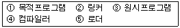
- ① → ② → ⑤ → ③ → ④
- ④ → ① → ② → ⑤ → ③
- ② → ⑤ → ③ → ④ → ①
- ③ → ④ → ① → ② → ⑤
(정답률: 90%)
15. 어셈블리어의 특징으로 옳지 않은 것은?
- 어셈블리어는 모든 컴퓨터 기종에 공통으로 적용할 수 있다.
- 어셈블리어는 기계어에 가까운 언어이다.
- 어셈블리어는 기계어와 1대1로 대응시켜서 표현한 기호식 표기법이다.
- 어셈블리어에서는 데이터가 기억된 번지를 기호(symbol)로 지정한다.
(정답률: 89%)
16. C 언어의 printf() 함수에서 실수를 출력할 때 사용하는 형식지정자는?
- %c
- %d
- %f
- %s
(정답률: 76%)
17. 해당 내용을 각 페이지 상단에 출력토록 하는 어셈블리어 명령은?
- TITLE
- INC
- REP
- INT
(정답률: 89%)
18. 하나의 오퍼랜드에 호출할 가로채기 벡터의 번호를 표현하여 가로채기를 요청하는 어셈블리어 명령은?
- TITLE
- INC
- INT
- REP
(정답률: 70%)
19. C 언어에서 정수형 변수 선언시 사용하는 것은?
- float
- char
- int
- double
(정답률: 83%)
20. 작성된 표현식이 BNF의 정의에 의해 바르게 작성되었는지를 확인하기 위하여 만든 트리는?
- Define Tree
- Control Tree
- Parse Tree
- Manipulation Tree
(정답률: 85%)
2과목: 자료구조 및 데이터통신
21. 한 개의 프레임을 전송하고, 수신측으로부터 ACK 및 NAK 신호를 수신할 때까지 정보 전송을 중지하고 기다리는 ARQ(automatic repeat request) 방식은?
- CRC 방식
- Go-back-N 방식
- Stop-and-wait 방식
- Selective repeat 방식
(정답률: 83%)
22. 다음 설명에 해당하는 LAN 토폴로지는?
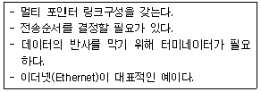
- 스타(Star)형
- 링(Ring)형
- 버스(Bus)형
- 그물(Mesh)형
(정답률: 72%)
23. 패킷 교환망에 접속되는 단말기 중 비패킷형 단말기(Non-Packet Mode Terminal)에서 패킷의 조립ㆍ분해 기능을 제공해 주는 일종의 어댑터는?
- GFI
- PTI
- SVC
- PAD
(정답률: 65%)
24. TCP 프로토콜에 대한 설명으로 틀린 것은?
- 스트림 데이터 서비스를 제공한다.
- 비연결형 서비스이다.
- 전이중 서비스를 제공한다.
- 신뢰성 있는 전송 프로토콜이다.
(정답률: 81%)
25. 신호를 구성하는 주파수에 따라서 전파속도가 다르기 때문에 일어나는 전송 손상 현상은?
- 감쇠현상
- 상호변조잡음
- 누화잡음
- 지연왜곡
(정답률: 75%)
26. 패킷 교환에서 가상회선 방식에 비해 데이터그램 방식이 갖는 장점으로 틀린 것은?
- 패킷이 동일한 경로로 전달되므로 항상 보내어진 순서대로 도착이 보장된다.
- 호 설정 과정이 없기 때문에 몇 개의 패킷으로 된 짧은 메시지를 전송할 경우 훨씬 빠르다.
- 망의 혼잡 상황에 따라 적절한 경로로 패킷을 전달할 수 있으므로 융통성이 크다.
- 한 노드가 고장 나면, 이 노드를 경유하는 가상회선이 두절되는데 비해 데이터그램 방식은 우회 경로로 패킷을 전달할 수 있으므로 신뢰성이 높다.
(정답률: 68%)
27. HDLC(High-level Data Link Control)에서 사용되는 프레임의 종류로 옳지 않은 것은?
- Information Frame
- Supervisor Frame
- Control Frame
- Unnumbered Frame
(정답률: 46%)
28. 다음 그림과 같은 전송 방식으로 옳은 것은?
- 문자 위주 동기방식
- 비트지향형 동기방식
- 조보식 동기방식
- 프레임 동기방식
(정답률: 81%)
29. 다음 설명에 해당하는 IP주소의 클래스로 옳은 것은?
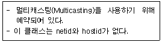
- A 클래스
- B 클래스
- C 클래스
- D 클래스
(정답률: 70%)
30. OSI 7계층 중 데이터링크 계층에 대한 설명으로 틀린 것은?
- 전송 계층으로부터 받은 비트 스트림을 프레임(frame)이라는 데이터 단위로 나눈다.
- 두 노드 간을 직접 연결하는 링크 상에서 프레임의 전달을 담당한다.
- 흐름제어와 오류복구를 통하여 신뢰성 있는 프레임 단위의 전달을 제공한다.
- 대표적인 데이터링크 계층의 프로토콜로는 HDLC, PPP, LLC 등이 있다.
(정답률: 42%)
31. 다음 산술식을 Pre-fix로 옳게 표현한 것은?
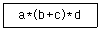
- **a+bcd
- *+a*bcd
- abc*+d*
- abc+*d*
(정답률: 61%)
32. 다음 트리의 차수(Degree)는?
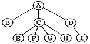
- 2
- 3
- 4
- 9
(정답률: 82%)
33. 해싱에서 서로 다른 두 개의 키 값이 같은 해시(hash) 주소를 갖는 현상을 무엇이라고 하는가?
- Mid-square
- Chaining
- Parsing
- Collision
(정답률: 94%)
34. 데이터베이스 설계 순서로 옳은 것은?
- 논리적 설계 → 개념적 설계 → 물리적 설계
- 개념적 설계 → 물리적 설계 → 논리적 설계
- 개념적 설계 → 논리적 설계 → 물리적 설계
- 논리적 설계 → 물리적 설계 → 개념적 설계
(정답률: 84%)
35. 다음 자료에 대하여 버블 정렬(bubble sort)을 이용하여 오름차순으로 정렬할 경우 "pass 1"의 실행 결과는?
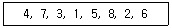
- 3, 1, 4, 5, 2, 6, 7, 8
- 1, 3, 4, 2, 5, 6, 7, 8
- 4, 3, 1, 5, 7, 2, 6, 8
- 1, 3, 2, 4, 5, 6, 7, 8
(정답률: 91%)
36. 트랜잭션의 특성을 옳게 나열한 것은?
- Atomicity, Consistency, Durability, Integrity
- Atomicity, Consistency, Durability, Isolation
- Automacity, Consistency, Durability, Isolation
- Atomicity, Coverage, Durability, Isolation
(정답률: 91%)
37. DBMS의 필수 기능으로 옳게 짝지어진 것은?
- 조작기능, 제어기능, 연쇄기능
- 정의기능, 조작기능, 독립기능
- 정의기능, 제어기능, 보안기능
- 정의기능, 조작기능, 제어기능
(정답률: 94%)
38. 데이터베이스의 특징으로 옳지 않은 것은?
- 독점 사용
- 내용에 의한 참조
- 계속적인 변화
- 실시간 접근성
(정답률: 88%)
39. 큐의 응용 분야로 적합한 것은?
- 운영체제의 작업 스케줄링
- 컴파일러를 이용한 언어번역
- 부프로그램 호출시 복귀주소 지정
- 인터럽트의 처리
(정답률: 87%)
40. 순차 파일(Sequential File)에 대한 설명으로 옳지 않은 것은?
- 일괄 처리보다 대화식 처리에 적합한 구조이다.
- 기억 장치의 효율적인 이용이 가능하다.
- 필요한 레코드를 삽입, 삭제, 수정하는 경우 파일 전체를 복사해야 한다.
- 파일 탐색시 효율이 나쁘다.
(정답률: 72%)
3과목: 전자계산기구조
41. 인터프리터(interpreter)를 사용하는 언어는?
- BASIC
- FORTRAN
- PASCAL
- Machine Code
(정답률: 69%)
42. 가상기억장치에서 주소 공간이 1024K이고 기억공간은 32K라고 가정할 때 주기억장치의 주소레지스터는 몇 비트로 구성되는가?
- 12
- 13
- 14
- 15
(정답률: 53%)
43. JK 플립플롭에서 J=1, K=1일 때 Qn+1의 출력은?
- Qn
- 0(reset)
- 1(set)
- toggle
(정답률: 52%)
44. 명령어 파이프라인이 정상적인 동작에서 벗어나게 하는 일반적인 원인이 아닌 것은?
- 자원 충돌
- 유효주소의 계산
- 데이터 의존성
- 분기 곤란
(정답률: 49%)
45. 인터럽트 발생시 동작 순서로 옳은 것은?
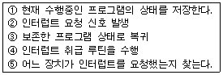
- ② → ⑤ → ① → ④ → ③
- ② → ① → ④ → ⑤ → ③
- ② → ④ → ① → ⑤ → ③
- ② → ① → ⑤ → ④ → ③
(정답률: 64%)
46. 입출력 제어 처리방식에 대한 설명으로 틀린 것은?
- 동작의 타이머를 조정하는 방식은 프로그램에 의해서 프로세서가 조정하는 중앙처리장치 제어방식과 별도의 제어장치를 두어 조정하는 전용장치 제어 방식이 있다.
- 중앙처리장치 제어방식은 입출력 시점을 중앙처리장치 동작 타이밍에 맞추는 동기방식과 입출력 장치의 동작 타이밍에 맞추는 비동기방식이 있다.
- 비동기 방식은 입출력 장치의 준비 상태를 중앙처리장치가 직접 검사하는 플래그 검사 방식과 입출력 장치에서 하드웨어적인 외부신호를 발생시켜 중앙처리장치에 알리는 인터럽트 제어 방식이 있다.
- 중앙처리장치 제어방식의 경우 동기방식과 비동기방식으로 나눌 수 있으며 인터럽트 제어방식은 동기방식에 해당된다.
(정답률: 37%)
47. 컴퓨터의 메이저 상태에 대한 설명으로 틀린 것은?
- 실행 상태가 끝나면 항상 패치 상태로만 간다.
- 간접 주소 명령어 형식인 경우 패치-간접-실행 순서로 진행되어야 한다.
- 실행 상태는 연산자 코드의 내용에 따라 연산을 수행하는 과정이다.
- 패치 상태에서는 기억 장치에서 인스트럭션을 읽어 중앙처리장치로 가져온다.
(정답률: 64%)
48. 다음은 ADD 명령어의 마이크로 오퍼레이션이다. t2 시간에 가장 알맞은 동작은? (단, MAR : Memory Address Register, MBR : memory Buffer Register, M(addr) : Memory, AC : 누산기)
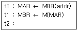
- AC ← MBR
- MBR ← AC
- M(MBR) ← MBR
- AC ← AC+MBR
(정답률: 62%)
49. 명령어를 구성하는 명령어 내 비트들의 할당에 영향을 주는 요소가 아닌 것은?
- 버스 개수
- 주소지정방식의 개수
- 주소 영역
- 연산코드
(정답률: 37%)
50. 양수 A와 B가 있다. 2의 보수 표현 방식을 사용하여 A-B를 수행하였을 때 최상위비트에서 캐리(carry)가 발생하였다. 이 결과로부터 A와 B에 대한 설명으로 가장 옳은 것은?
- 캐리가 발생한 것으로 보아 A는 B보다 작은 수이다.
- B-A를 수행하면 최상위비트에서 캐리가 발생하지 않는다.
- A+B를 수행하면 최상위비트에서 캐리가 발생한다.
- A-B의 결과에 캐리를 제거하고 1을 더해주면 올바른 결과를 얻을 수 있다.
(정답률: 42%)
51. 다음 중 사용자의 의도적인 인터럽트에 해당되는 것은?
- 스택 오버플로우
- 정전
- 시스템 호출
- 입출력 장치의 데이터 전송 요청
(정답률: 37%)
52. 인터럽트 서비스가 진행되면 다른 인터럽트를 배제시켜야 하는데 이 때 변경시켜야 하는 flag는 무엇이며, 어떻게 변경하여야 하는가?
- IEN ← 1
- IEN ← 0
- VAD ← 0
- VAD ← 1
(정답률: 45%)
53. 제어 주소 레지스터(control address register)에 적재될 수 없는 것은?
- MAR(memory address register)의 내용
- 사상(mapping)의 결과값
- 주소 필드(address field)
- 서브루틴 레지스터(subroutine register)의 내용들
(정답률: 33%)
54. 프로그램 카운터가 명령어의 주소부분과 더해져서 유효번지를 결정하는 주소지정방식은?
- 레지스터 주소지정방식
- 상대 주소지정방식
- 간접 주소지정방식
- 인덱스 주소지정방식
(정답률: 41%)
55. 클라우드 컴퓨팅(cloud computing)에 대한 설명으로 틀린 것은?
- 인터넷 기술을 활용하여 가상화된 IT 자원을 서비스로 제공하는 컴퓨팅이다.
- 사용자는 IT 자원을 필요한 만큼 빌려서 사용하고 필요한 경우 비용을 지불한다.
- 클라우드 컴퓨팅은 서비스 제공자가 장애로 인해 서비스를 제공하지 못하면 자료에 접근이 불가능하다.
- PaaS는 서버, 데스크탑 컴퓨터, 스토리지 같은 IT 하드웨어 자원을 클라우드 서비스로 빌려 쓰는 형태를 말한다.
(정답률: 56%)
56. 다음 불 함수를 간소화한 결과로 가장 옳은 것은? (단, d()는 무관 조건임)
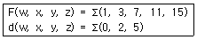
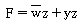
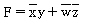
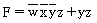
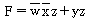
(정답률: 20%)
57. 고선명(HD) 비디오 데이터를 저장하기 위해 짧은 파장(4⑤나노미터)을 갖는 레이저를 사용하는 광기록방식 저장매체는?
- Blu-ray 디스크
- CD
- DVD
- 플래시 메모리
(정답률: 68%)
58. 일반적인 제어 장치 모델에서 제어 장치로 입력되는 항목이 아닌 것은?
- CPU 내의 제어 신호들
- 클록
- 명령어 레지스터
- 플래그
(정답률: 24%)
59. 반가산기에서 입력을 X, Y라 할 때 출력 부분의 캐리(carry) 값은?
- XY
- X
- Y
- X+Y
(정답률: 54%)
60. 수직 마이크로명령어 방식의 명령어가 다음의 형식을 갖는다면 이 제어장치는 최대 몇 개의 제어 신호를 동시에 생성할 수 있는가?
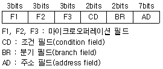
- 1개
- 2개
- 3개
- 4개
(정답률: 37%)
4과목: 운영체제
61. 운영체제의 운영 기법 중 "Quantum"과 관계되는 것은?
- Real-time processing system
- Batch processing system
- Time-sharing system
- Distributed processing system
(정답률: 40%)
62. 프로세스의 처리 시간보다 페이지 교체에 소요되는 시간이 더 많아지는 현상을 의미하는 것은?
- 스케줄링
- 스래싱
- 프리페이징
- 워킹 셋
(정답률: 70%)
63. 운영체제의 역할로 거리가 먼 것은?
- 시스템의 오류 검사 및 복구
- 자원의 스케줄링 기능 제공
- 원시 프로그램에 대한 토큰 생성
- 자원 보호 기능 제공
(정답률: 59%)
64. 디렉토리의 구조 중 중앙에 마스터 파일 디렉토리가 있고 하부에 사용자 파일 디렉토리가 있는 구조는?
- 단일 디렉토리 구조
- 2단계 디렉토리 구조
- 트리 디렉토리 구조
- 비순환 그래프 디렉토리 구조
(정답률: 62%)
65. 다음 설명에 해당하는 자원 보호 기법은?
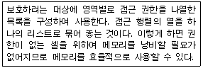
- 전역 테이블
- 접근 제어 리스트
- 권한 리스트
- 잠금-키(Lock-Key)
(정답률: 44%)
66. SCAN의 무한 대기 발생 가능성을 제거한 것으로 SCAN 보다 응답시간의 편차가 적고, SCAN과 같이 진행 방향상의 요청을 서비스하지만, 진행 중에 새로이 추가된 요청은 서비스하지 않고 다음 진행시에 서비스하는 디스크 스케줄링 기법은?
- N-step SCAN 스케줄링
- C-SCAN 스케줄링
- SSTF 스케줄링
- FCFS 스케줄링
(정답률: 48%)
67. 주기억장치 관리기법인 최악, 최초, 최적적합기법을 각각 사용할 때, 각 방법에 대하여 10K의 프로그램이 할당되는 영역을 각 기법의 순서대로 옳게 나열한 것은? (단, 영역 A, B, C, D는 모두 비어 있다고 가정한다.)(문제 복원 오류로 그림이 없습니다. 정답은 4번 입니다.)
- 영역 D, 영역 A, 영역 A
- 영역 D, 영역 A, 영역 B
- 영역 B, 영역 A, 영역 A
- 영역 D, 영역 B, 영역 C
(정답률: 55%)
68. 분산처리 운영체제에서 구체적인 시스템 환경을 사용자가 알 수 없도록 하며, 또한 사용자들로 하여금 이에 대한 정보가 없어도 원하는 작업을 수행할 수 있도록 지원하는 개념을 무엇이라고 하는가?
- Naming
- Transparency
- Encryption
- Locality
(정답률: 38%)
69. RR(Round Robin) 스케줄링에 대한 설명으로 옳지 않은 것은?
- Time slice를 크게 하면 입출력 위주의 작업이나 긴급을 요하는 작업에 신속히 반응하지 못한다.
- Time slice가 작을 경우 FCFS 스케줄링과 같아진다.
- Time Sharing System을 위해 고안된 방식이다.
- Time slice가 작을수록 문맥교환에 따른 오버헤드가 자주 발생한다.
(정답률: 47%)
70. UNIX의 파일 시스템 구조와 거리가 먼 것은?
- 사용자 블록
- i-node 블록
- 데이터 블록
- 슈퍼 블록
(정답률: 46%)
71. 다음 표와 같이 작업이 할당되었을 경우 내부단편화 및 외부단편화 크기는 얼마인가?
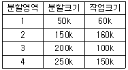
- 내부단편화 : 200 K, 외부단편화 : 200 K
- 내부단편화 : 50 K, 외부단편화 : 150 K
- 내부단편화 : 650 K, 외부단편화 : 470 K
- 내부단편화 : 250 K, 외부단편화 : 170 K
(정답률: 54%)
72. 하이퍼 큐브에서 하나의 프로세서에 연결되는 다른 프로세서의 수가 3개일 경우 필요한 총 프로세서의 수는?
- 4
- 8
- 16
- 32
(정답률: 56%)
73. 은행가 알고리즘(Banker's Algorithm)은 다음 교착상태 해결 방법 중 어떤 분야에 속하는가?
- 교착 상태의 예방
- 교착 상태의 회피
- 교착 상태의 발견
- 교착 상태의 회복
(정답률: 69%)
74. 4개의 프레임을 수용할 수 있는 주기억장치가 있으며, 초기에는 모두 비어 있다고 가정한다. 다음의 순서로 페이지 참조가 발생할 때, FIFO 페이지 교체 알고리즘을 사용할 경우 페이지 결함의 발생 횟수는?
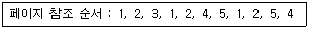
- 6회
- 7회
- 8회
- 9회
(정답률: 45%)
75. 파일 디스크립터의 내용으로 옳지 않은 것은?
- 오류 발생시 처리 방법
- 보조기억장치 정보
- 파일 구조
- 접근 제어 정보
(정답률: 49%)
76. 시스템 성능 평가 요인으로 거리가 먼 것은?
- 신뢰도
- 처리 능력
- 응답 시간
- 프로그램 크기
(정답률: 68%)
77. UNIX에서 I-node는 한 파일이나 디렉토리에 관한 모든 정보를 포함하고 있는데, 이에 해당하지 않는 것은?
- 파일 소유자의 사용자 번호
- 파일이 만들어진 시간
- 데이터가 담긴 블록의 주소
- 파일이 가장 처음 변경된 시간 및 파일의 타입
(정답률: 56%)
78. 두 개의 프로세스 간 선행순서를 Pa<Pb로 표현할 경우 Pb가 먼저 실행된다고 가정한다면, P2<P1,P4<P2, P4<P3의 선행관계가 있는 경우에 병행으로 실행될 수 있는 프로세스로 짝지어진 것은?
- P1, P3
- P1, P4
- P2, P4
- P3, P4
(정답률: 49%)
79. 분산 운영체제의 특징 중 다음 설명과 관계되는 것은?
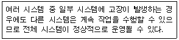
- Availability
- Expandability
- Resource Sharing
- Reliability
(정답률: 40%)
80. UNIX 운영체제의 특징으로 적합하지 않은 것은?
- 트리 구조의 파일 시스템을 갖는다.
- Multi-Tasking은 지원하지만 Multi-User는 지원하지 않는다.
- 높은 이식성과 확장성이 있다.
- 대부분 C 언어로 작성되어 있다.
(정답률: 66%)
5과목: 마이크로 전자계산기
81. 포팅을 통해 리눅스 프로그램/유틸리티를 MS윈도에서 사용할 수 있도록 하는 프로그램은?
- cygwin
- perl
- JDK
- driver development kit
(정답률: 59%)
82. 마이크로프로그램 제어 방식의 장점이 아닌 것은?
- 마이크로컴퓨터 개발이 용이하다.
- 원가를 절감시킬 수 있다.
- 새로운 명령어를 쉽게 추가할 수 있다.
- 하드와이어드 방식에 비해 속도가 빠르다.
(정답률: 62%)
83. 입출력장치의 비동기식 제어방식에서 가장 많이 사용되는 방식은?
- open loop 방식
- closed loop 방식
- handshake 방식
- inter lock 방식
(정답률: 68%)
84. 다음 설명에 해당하는 마이크로프로세서의 제어신호는?
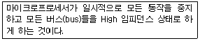
- Reset
- Bus Request
- Interrupt Request
- Read
(정답률: 53%)
85. 그림은 입출력 제어장치와 입출력 버스의 연결을 나타낸 것이다. 빈 블록 ?에 알맞은 내용은?
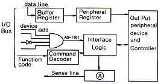
- Accumulator
- Status Register
- Shift Register
- Control Register
(정답률: 40%)
86. 다음 입출력 방식 중 microprocessor가 I/O divice의 동작속도를 미리 알고 있어야 하는 방식은?
- 동기식 입출력
- 비동기식 입출력
- 핸드쉐이크 입출력
- 채널
(정답률: 50%)
87. 좋은 소프트웨어가 갖는 특징으로 가장 옳지 않은 것은?
- 다른 시스템에 적용, 결합하는 등 응용성이 뛰어나다.
- 사용자가 이해하기 쉽다.
- 프로그램이 짧고, 간단하다.
- 전체적인 흐름을 추적하기에 용이하다.
(정답률: 59%)
88. CPU의 상태 플래그(status flag)에 관한 설명 중 틀린 것은?
- 보조캐리 플래그(auxiliary carry flag)는 BCD 연산에 사용된다.
- Z 플래그(zero flag)는 ALU 연산 결과가 0인지 여부에 따라 셋트 된다.
- N 플래그(negative flag)는 ALU 연산 결과가 음수인지 여부에 따라 셋트 된다.
- 제일 왼쪽 비트에서 발생되는 올림수를 Cp, 왼쪽의 2번째 비트에서 발생되는 올림수를 Cs라 할 때 오버플로우(overflow) 발생 조건은 Cs+Cp로 주어지게 된다.
(정답률: 51%)
89. 프로그램 제어에 의한 전송(programmed I/O) 방식에서 중앙처리 장치와 입출력 기기 간에 주고받는 정보로서 필수적인 정보가 아닌 것은?
- 우선순위(priority)
- 데이터(data)
- 상태(status)
- 커맨드(command)
(정답률: 35%)
90. 서브루틴 호출이나 인터럽트 서비스와 같은 동작 후에 되돌아갈 주소를 저장하는 것은?
- 상태 레지스터(Status register)
- 프로그램 계수기(Program counter)
- 메모리 주소 레지스터(Memory address register)
- 스택(Stack)
(정답률: 60%)
91. 보조기억장치에 저장되어 있는 정보를 주기억장치로 읽어오는 작업을 의미하는 것은?
- transfer
- load
- store
- compile
(정답률: 83%)
92. 다음 중 firmware에 적합하지 않은 것은?
- mask ROM
- static RAM
- EPROM
- PROM
(정답률: 64%)
93. 시스템 동작 개시 후 최초로 주기억 장치에 프로그램을 로드하는 것은?
- IPL(Initial Program Load)
- Assembler
- Listing Program
- Utility Program
(정답률: 67%)
94. 마이크로프로세서(MPU)의 구성요소에 속하지 않는 것은?
- ALU
- REGISTER
- PROGRAM COUNTER
- CLOCK
(정답률: 68%)
95. 그림은 1bit의 기억소자를 개념적으로 그린 것이다. 각 단자 중 자료를 기억시키기 위하여 입력되는 단자는?
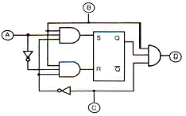
- A
- B
- C
- D
(정답률: 49%)
96. 다음 그림에 대한 설명 중 틀린 것은?
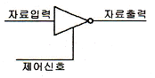
- 제어 신호가 낮은 상태(Low)일 때 자료출력은 1이다.
- 인버팅 버터이다.
- 신호 증폭에 사용될 수 있다.
- 이와 같은 종류의 버퍼를 3상태(Tri-State) 장치라고 한다.
(정답률: 52%)
97. Read/Write signal이나 Chip Select signal 등의 신호는 어느 버스에 싣게 되는가?
- 자료 버스
- 주소 버스
- 제어 버스
- 보조 버스
(정답률: 73%)
98. 컴퓨터의 모든 행위를 감시하고, 통제하는 일련의 거대한 소프트웨어의 집합체를 무엇이라 하는가?
- 오퍼레이팅 시스템(operating system)
- 어셈블러(assembler)
- 컴파일러(compiler)
- 로더(loader)
(정답률: 76%)
99. 임베디드 시스템 개발시 디버깅하기 위한 장비는?
- JNI
- JAVA
- ZTAG
- JTAG
(정답률: 56%)
100. 다음 중 캐스케이드(cascade) 스택의 특징으로 옳은 것은?
- 스택 포인터를 따로 지정할 필요가 없다.
- PUSH할 때마다 스택 포인터가 증가한다.
- 기억 번지 내에 구성되므로 융통성이 높다.
- 스택의 bottom이 정의되지 않는다.
(정답률: 44%)